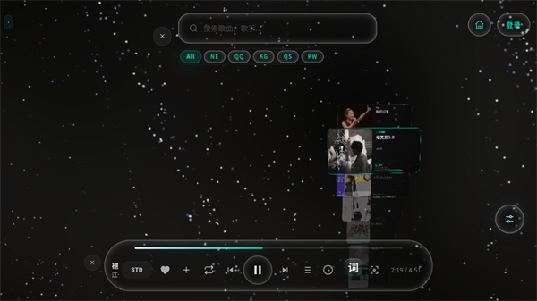
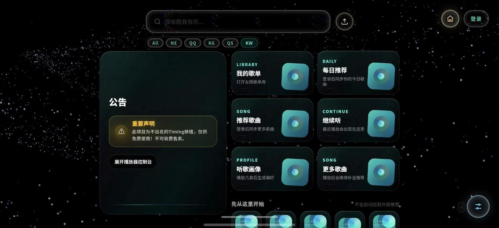

Mineradio 快问快答：粒子音乐播放器到底值不值得装
整理一篇关于 Mineradio 的快问快答，从功能定位、四端差异、免费开源到视觉系统和使用坑点，帮你三两分钟把这款播放器摸透。
整理一篇关于 Mineradio 的快问快答——这款主打粒子视觉的开源播放器，网上能搜到的介绍不少，但信息散。把最常被问的点一次说清，省得你东拼西凑。
Mineradio 是什么？谁该用它？
简单说，Mineradio 是一款开源的聚合音乐播放器——核心卖点不是曲库有多大，而是它那套 3D 粒子视觉系统。放歌的时候，背景的粒子会跟着鼓点律动，歌词不再是一行小字而是悬浮在粒子中间的"舞台元素"，还配了电影级的运镜。
谁该用？如果你听歌时喜欢盯着画面发呆、或者想给桌面添点氛围，值得试试。歌单管理、聚合搜索这些基础功它也都能做，所以不挑剔的普通听歌用户也能用。要找付费无损曲库的，那不是它的定位——播放器本身不破解付费，平台会员歌还是得你自己开。想先看一眼效果，它的官网有完整的视觉演示截图和视频。

Windows、Mac、安卓、网页版，四端差异大吗？装哪个？
差异比你想象的小——聚合搜索、天气电台、3D 粒子视觉、歌词舞台这些核心能力四端都有。真正区分开的是两个独占功能：桌面版有悬浮的桌面歌词窗口，手机端没有；手机端（含网页版）有 PWA 安装方式，桌面版不需要。
系统要求也不高：Windows 10/11 双击安装包就行；macOS 自动检测 Apple 芯片还是 Intel，检测失败默认给 Intel 包、Apple 芯片通过 Rosetta 2 也能跑；安卓端要求 Android 8.0 以上、APK 直装；网页版最省事，浏览器打开就用，连安装都省了。
怎么选？主要在电脑前听歌、想要桌面歌词悬浮就装桌面版；通勤刷歌选安卓 APK；电脑不是自己的或者想 iPhone 上凑合用，直接进网页版。多设备全都要也合理——账号歌单各端同步。需要安装包的时候，官方下载渠道走正规的发布通道，别碰来路不明的第三方修改包。
免费开源是真的？有广告吗？
三件事可以分别验证。
免费是真的——播放、聚合搜索、歌词、视觉系统、歌单管理这些核心能力全部免费开放，没有"看广告解锁"，也没有内购。但要注意：播放器本身不破解付费，音源平台的会员专属歌曲，还是得你在对应平台开会员才能放。开源协议是 GPL-3.0，原版代码在 GitHub 公开，任何人可以查看、Fork、二创——所以社区里出现了移动端移植、镜像仓库这些分支。原仓库标注"长期停更，保留公开源码"，新版本由官方继续发布。
无广告也是实打实的——启动到播放全程没有弹窗、没有诱导点击的付费按钮，第三方评测实测确认了这一点。公告里甚至写着"仅供免费使用，不可收费售卖"，挣的不是用户的钱。
那套粒子视觉系统到底有什么门道？
拆开就是三件事：粒子、镜头、歌词舞台。
粒子是背景和前景的律动系统——鼓点重的段落粒子翻腾，舒缓段落漂浮；没放歌时是安静的星河壁纸，放歌后粒子接管画面。还有一批预设皮肤可以选，星河、唱片、音域回响之类的。镜头是一套贴合音乐节奏的运镜系统，跟着节拍推拉摇移，和粒子联动——镜头推近时粒子景深变化，节奏切换时镜头角度跟随。歌词舞台则把歌词从一行小字变成舞台元素：放大、发光、悬浮在粒子中间，随歌曲逐行切换。
待机态和播放态是两副面孔——待机时干净的银河壁纸铺满界面，适合当桌面氛围；播放时歌词舞台和粒子舞台同步启动，切到专门的播放态视觉。理解了这三件事的分工，调参数时就知道该去哪改了。

睡眠定时怎么用？有什么容易忽略的小坑？
功能就是为"听着歌入睡又不想它放一整夜"这个具体问题设计的——设个倒计时，到点自动停。位置在底部播放控制条的时钟图标上，部分版本在播放页的更多菜单里；找不到时在控制条从左往右扫一遍图标，不同版本可能是时钟或月亮样式，实在拿不准可以翻Mineradio文档里的各版本对照。
使用步骤很简单：播放任何内容（歌单、电台、播客都行）→ 点时钟图标 → 选一个倒计时时长或自定义分钟数 → 正常播放就行。想取消或加时回到同一个入口调整。
两个小细节容易忽略：定时只停播放、不退出应用，后台挂着不耗多少资源但介意的话可以手动关；如果睡前忘了设，多数设备的系统自带媒体音量定时或熄屏断播策略可以兜底。几个经典的睡前组合可以参考：天气电台加定时（雨天晚上舒缓队列起头，四五十分钟基本撑到入睡）、长播客加定时（断点由"继续听"接管，明晚接着放）、本地 FLAC 库安静放加定时。
和其他聚合播放器比，Mineradio 的优势在哪？
最大的差异化就是视觉系统——大多数聚合播放器把视觉当可有可无的附属功能，Mineradio 反过来把它做成了核心卖点的一套完整系统。桌面歌词悬浮、3D 歌单架、摄像头手势玩法（网页版上最完整），这些细节堆在一起就是和其他同类产品的体验差。
四端覆盖也是一个加分项——从桌面到手机到网页版，同一套账号歌单在各端同步，多设备切换不丢进度。再加上开源和无广告这两个硬承诺，对于重视界面干净、不想被打扰的用户来说是实打实的加分。当然它也不是万能的——视觉效果吃一点 GPU 资源，低配设备上粒子系统可能会降级适配。
隐私安全这块做得怎么样？
官方声明所有数据本地存储、不收集用户信息。需要联网的动作只有两类：拉取音源平台的歌曲数据，以及天气电台获取实时天气。安卓端申请的定位权限只服务于天气电台功能，不会做其他用途。
但有一点要注意：播放器本身不破解付费、不绕过付费限制、标注仅供个人学习与本地播放辅助。这意味着它在合规边界上是踩得比较稳的，不需要担心突然被平台联合封杀。
最后一句
如果你听歌时喜欢看画面、想要一个干净无广告的播放器、或者想给桌面添点氛围，Mineradio 值得装——先开网页版试试视觉效果对不对你胃口，再决定要不要装桌面或安卓版。视觉党必入，纯听歌用户也能凑合用。
关于 Mineradio 的完整资料和历史版本，在GitHub、Gitee、GitCode三个仓库都能找到同步副本，代码、下载说明和开源协议文件一应俱全，国内访问优先选 Gitee 或 GitCode 体验更顺。